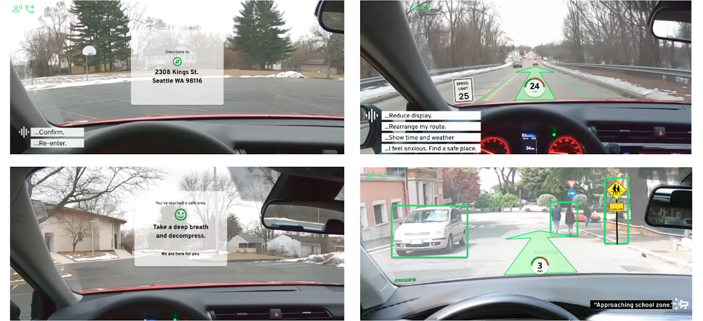
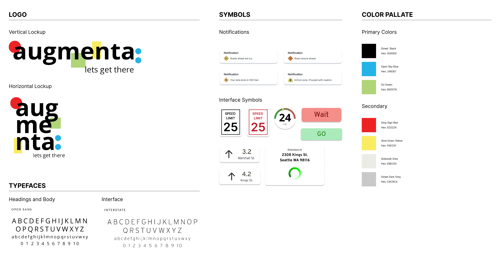

Augmenta: Navigating the Intersection of AR and Driver Anxiety
The Mission: Designing a voice-activated AR/VR windshield to reduce cognitive load and provide emotional support for drivers.
Overview
The Problem
Drivers are overwhelmed by "screen fragmentation"—the dangerous cognitive tax of switching focus between a mobile GPS and the road—which heightens anxiety and slows reaction times.
The Outcome
A high-fidelity AR HUD "Co-Pilot" concept that centralizes navigation into the driver’s natural line of sight, reducing cognitive load and resolving the safety gaps found in traditional hands-free interfaces.
- My Role: UX Researcher & Strategist (Collaborative team of 3).
- Context: A 10-week intensive sprint for HCDE 518 (University of Washington).
Understand
We began with a broad question: How can we keep eyes on the road?
To answer this question we began a literature review and began benchmarking other similar products. This research led to a key insight: driver distraction is often a direct symptom of underlying driving anxiety.
The Strategic Shift
We realized that reducing distraction wasn't enough; we had to address the emotional state of the driver. The goal was to create a system that feels like a "co-pilot," not just a map.
Research
Methodology & Rigor
Quantitative Survey (n=24)
Validated core navigation pain points, revealing that 60% of drivers prioritize route efficiency while 50% actively change behavior to avoid tolls.
Qualitative Interviews (n=4)
Conducted deep dives into driver psychology. We discovered that instruction clarity and timely feedback are the primary levers for reducing situational anxiety.
Literature Review
Established critical guardrails for AR/VR integration by analyzing established cognitive load limits to ensure driver safety.
Operational Artifacts
Mapping the User Journey
map the transition from manual input to AR-supported navigation for the Augmenta windshield interface, providing a foundational logic for the engineering team to build a cohesive human-AI driving experience that reduces cognitive load during high-stakes maneuvers.
View High-Res Flow
Targeting High-Anxiety Personas
We moved away from "general drivers" to focus on those most vulnerable to cognitive overload. These personas helped us prioritize the "Safe Place" protocol and voice-first interaction design.
Contextual Storyboarding
Before moving to Figma, we storyboarded the environmental context. This allowed us to visualize the HUD interface in various lighting and traffic conditions, ensuring the "Co-Pilot" concept felt seamless.
Persona Iteration Note:
V1 vs. V2: We didn't just make personas; we iterated them. When our design pivoted from mobile to HUD, we "retired" the aggressive driver persona to focus on the Inexperienced/Stressed Driver who benefits most from emotional support features.
Outcome & Impact
"I can't tell how to interact with this while my hands are on the wheel." — Participant 03, Leading to the removal of the mobile-entry requirement.
Based on two rounds of testing, we implemented five "Non-Negotiable" requirements:
- Adaptive Interface: Users can scale UI elements based on personal visual needs.
- "Safe Place" Protocol: A voice-activated feature to guide anxious users to the nearest stop.
- Multi-Modal Input: Seamless transition between voice and manual controls.
Takeaways
Operational Excellence: Handled a major project pivot mid-sprint by re-coding our user flows and refining personas to match the new HUD-centric scope.
Leadership: Mentored team members through the transition from low-fi storyboards to a high-fidelity Figma prototype that satisfied both "Anxiety" and "Distraction" objectives.
Future Vision:
If given a 20-week timeline, our focus would shift to regulatory compliance testing (NHTSA standards) to move from a concept to a "market-ready" safety tool.
Final Deliverables
Final High-Fidelity Prototype
Brand Style Guide
[Augmenta Concept Video]